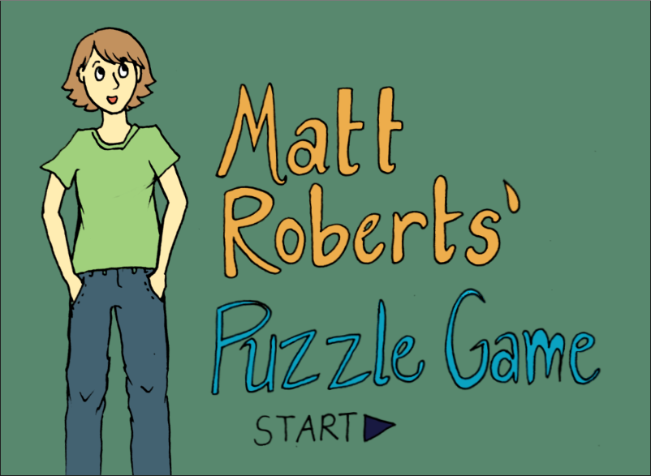

Matt Robert's Puzzle Game

Click here to be taken to the game
Game created for my Freshmen English Class at Georgia Tech. The focus of the class was game design and story telling through alternative digital media forms. As a final project, my team worked to create a puzzle game with a narrative to explain how puzzle games are relevant in everyday life. Takes between 30-60 minutes to complete.
Dracula Interactive Fiction

Click here to be taken to the game
Interactive fiction game based on Bram Stoker's Dracula. This game focuses on a relatively small subplot within the novel, the elimination of Dracula's crates of earth. Recently ported to the new version of Inform 7 to allow easy export to web (may have led to the introduction of a few unfound bugs).